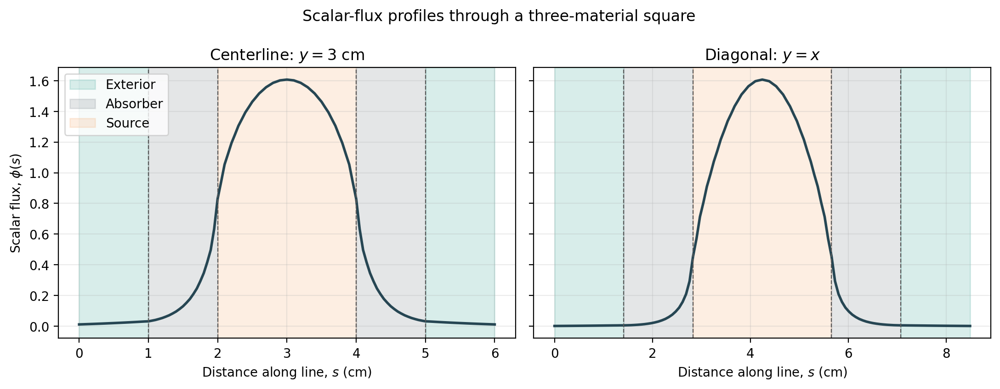

4.1.2. Sampling Scalar Flux Along Lines
This tutorial uses FieldFunctionInterpolationLine to sample a one-group scalar-flux field through a two-dimensional problem containing three materials. The solution is sampled along a horizontal centerline and a corner-to-corner diagonal, then exported to CSV and plotted as a function of distance along each path.
By the end, you will be able to configure a line interpolator, identify its field-value column in the exported file, and relate changes in a flux profile to material interfaces.
4.1.2.1. Build and solve a three-material square
The square domain spans \(0 \le x,y \le 6\) cm. A unit source is present in the central \(2 \times 2\) cm square. A strongly absorbing square shell surrounds the source, and a more weakly absorbing exterior fills the remainder of the domain. Vacuum boundaries allow particles to leave on every side.
Region |
Spatial extent (cm) |
\(\Sigma_t\) (cm\(^{-1}\)) |
Scattering ratio |
Source |
|---|---|---|---|---|
Source |
\(2 \le x,y \le 4\) |
1.0 |
0.8 |
1.0 |
Absorber |
\(1 \le x,y \le 5\), outside the source |
2.0 |
0.1 |
0.0 |
Exterior |
Remainder of the domain |
0.6 |
0.5 |
0.0 |
[ ]:
import csv
import math
import os
from glob import glob
import matplotlib.pyplot as plt
from mpi4py import MPI
from pyopensn.aquad import GLCProductQuadrature2DXY
from pyopensn.context import Finalize
from pyopensn.fieldfunc import FieldFunctionInterpolationLine
from pyopensn.logvol import RPPLogicalVolume
from pyopensn.math import Vector3
from pyopensn.mesh import OrthogonalMeshGenerator
from pyopensn.solver import DiscreteOrdinatesProblem, SteadyStateSourceSolver
from pyopensn.source import VolumetricSource
from pyopensn.xs import MultiGroupXS
comm = MPI.COMM_WORLD
rank = comm.rank
domain_size = 6.0
num_cells_per_axis = 60
nodes = [
domain_size * i / num_cells_per_axis
for i in range(num_cells_per_axis + 1)
]
mesh = OrthogonalMeshGenerator(node_sets=[nodes, nodes]).Execute()
mesh.SetUniformBlockID(2)
absorber_region = RPPLogicalVolume(
xmin=1.0, xmax=5.0, ymin=1.0, ymax=5.0, infz=True
)
source_region = RPPLogicalVolume(
xmin=2.0, xmax=4.0, ymin=2.0, ymax=4.0, infz=True
)
mesh.SetBlockIDFromLogicalVolume(absorber_region, 1, True)
mesh.SetBlockIDFromLogicalVolume(source_region, 0, True)
source_xs = MultiGroupXS()
source_xs.CreateSimpleOneGroup(sigma_t=1.0, c=0.8)
absorber_xs = MultiGroupXS()
absorber_xs.CreateSimpleOneGroup(sigma_t=2.0, c=0.1)
exterior_xs = MultiGroupXS()
exterior_xs.CreateSimpleOneGroup(sigma_t=0.6, c=0.5)
source = VolumetricSource(block_ids=[0], group_strength=[1.0])
quadrature = GLCProductQuadrature2DXY(
n_polar=2, n_azimuthal=32, scattering_order=0
)
problem = DiscreteOrdinatesProblem(
mesh=mesh,
num_groups=1,
groupsets=[
{
"groups_from_to": (0, 0),
"angular_quadrature": quadrature,
"inner_linear_method": "petsc_gmres",
"l_abs_tol": 1.0e-10,
"l_max_its": 200,
}
],
xs_map=[
{"block_ids": [0], "xs": source_xs},
{"block_ids": [1], "xs": absorber_xs},
{"block_ids": [2], "xs": exterior_xs},
],
volumetric_sources=[source],
boundary_conditions=[
{"name": name, "type": "vacuum"}
for name in ("xmin", "xmax", "ymin", "ymax")
],
options={
"verbose_inner_iterations": False,
"verbose_outer_iterations": False,
},
)
solver = SteadyStateSourceSolver(problem=problem)
solver.Initialize()
solver.Execute()
4.1.2.2. Sample the scalar flux
GetScalarFluxFieldFunction()[0] creates the group-0 scalar-flux field function from the converged solution. Two line interpolators construct 121 equally spaced samples: the centerline runs horizontally from \((0,3)\) to \((6,3)\), while the diagonal runs from \((0,0)\) to \((6,6)\). ExportToCSV gathers each distributed profile onto rank 0 and writes the coordinates plus a field-value column whose name comes from the field function.
The endpoints are moved slightly inside the mesh so every sample has an unambiguous containing cell.
[ ]:
scalar_flux = problem.GetScalarFluxFieldFunction()[0]
epsilon = 1.0e-6
line_definitions = [
(
"centerline",
Vector3(epsilon, 3.0, 0.0),
Vector3(domain_size - epsilon, 3.0, 0.0),
),
(
"diagonal",
Vector3(epsilon, epsilon, 0.0),
Vector3(domain_size - epsilon, domain_size - epsilon, 0.0),
),
]
line_data = {}
for line_name, initial_point, final_point in line_definitions:
csv_prefix = f"multimaterial_flux_{line_name}"
if rank == 0:
for old_file in glob(f"{csv_prefix}_*.csv"):
os.remove(old_file)
comm.Barrier()
line = FieldFunctionInterpolationLine()
line.SetInitialPoint(initial_point)
line.SetFinalPoint(final_point)
line.SetNumberOfPoints(121)
line.AddFieldFunction(scalar_flux)
line.Execute()
line.ExportToCSV(csv_prefix)
comm.Barrier()
if rank == 0:
csv_filename = glob(f"{csv_prefix}_*.csv")[0]
with open(csv_filename, newline="") as csv_file:
reader = csv.DictReader(csv_file)
field_column = next(
name
for name in reader.fieldnames
if name not in ("x", "y", "z")
)
rows = list(reader)
x = [float(row["x"]) for row in rows]
y = [float(row["y"]) for row in rows]
distances = [
math.hypot(x_value - x[0], y_value - y[0])
for x_value, y_value in zip(x, y)
]
line_data[line_name] = {
"distance": distances,
"flux": [float(row[field_column]) for row in rows],
"filename": csv_filename,
}
line_metrics = None
if rank == 0:
line_metrics = {
name: {
"count": len(profile["flux"]),
"maximum": max(profile["flux"]),
"boundary": profile["flux"][-1],
}
for name, profile in line_data.items()
}
line_metrics = comm.bcast(line_metrics, root=0)
if rank == 0:
print(f"Centerline sample count={line_metrics['centerline']['count']}")
print(f"Diagonal sample count={line_metrics['diagonal']['count']}")
print(
f"Centerline maximum flux={line_metrics['centerline']['maximum']:.8e}"
)
print(f"Diagonal maximum flux={line_metrics['diagonal']['maximum']:.8e}")
print(
f"Centerline boundary flux={line_metrics['centerline']['boundary']:.8e}"
)
print(f"Diagonal boundary flux={line_metrics['diagonal']['boundary']:.8e}")
4.1.2.3. Plot the line profiles
Each panel uses distance \(s\) from the start of its line. The shaded bands identify the exterior, absorber, and source portions of the corresponding path. The diagonal spends \(\sqrt{2}\) times as much distance in each square layer as the horizontal centerline. The committed figure below was generated by this cell; uncomment fig.savefig(...) to regenerate it after changing the problem.
[ ]:
def shade_material_path(ax, distance_scale, include_labels):
spans = [
(0.0, 1.0, "#2a9d8f", "Exterior"),
(1.0, 2.0, "#6c757d", "Absorber"),
(2.0, 4.0, "#f4a261", "Source"),
(4.0, 5.0, "#6c757d", None),
(5.0, 6.0, "#2a9d8f", None),
]
for start, end, color, label in spans:
ax.axvspan(
start * distance_scale,
end * distance_scale,
color=color,
alpha=0.18,
label=label if include_labels else None,
)
if rank == 0:
fig, axes = plt.subplots(1, 2, figsize=(11.0, 4.3), sharey=True)
plot_specs = [
(axes[0], "centerline", 1.0, r"Centerline: $y=3$ cm"),
(axes[1], "diagonal", math.sqrt(2.0), r"Diagonal: $y=x$"),
]
for index, (ax, name, scale, title) in enumerate(plot_specs):
shade_material_path(ax, scale, include_labels=index == 0)
ax.plot(
line_data[name]["distance"],
line_data[name]["flux"],
color="#264653",
linewidth=2.0,
)
for interface in (1.0, 2.0, 4.0, 5.0):
ax.axvline(
interface * scale,
color="0.35",
linestyle="--",
linewidth=0.8,
)
ax.set_xlabel(r"Distance along line, $s$ (cm)")
ax.set_title(title)
ax.grid(alpha=0.25)
axes[0].set_ylabel(r"Scalar flux, $\phi(s)$")
axes[0].legend(loc="upper left")
fig.suptitle("Scalar-flux profiles through a three-material square")
fig.tight_layout()
# fig.savefig("images/field_function_line.png", dpi=200, bbox_inches="tight")
plt.close(fig)
for profile in line_data.values():
os.remove(profile["filename"])
comm.Barrier()
assert all(metrics["count"] == 121 for metrics in line_metrics.values())
assert all(
metrics["maximum"] > metrics["boundary"] > 0.0
for metrics in line_metrics.values()
)
if "opensn_console" not in globals():
from IPython import get_ipython
if get_ipython() is not None:
Finalize()
MPI.Finalize()
